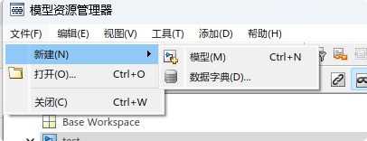
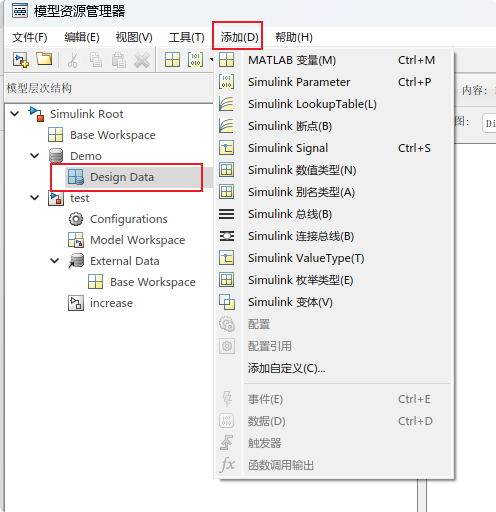
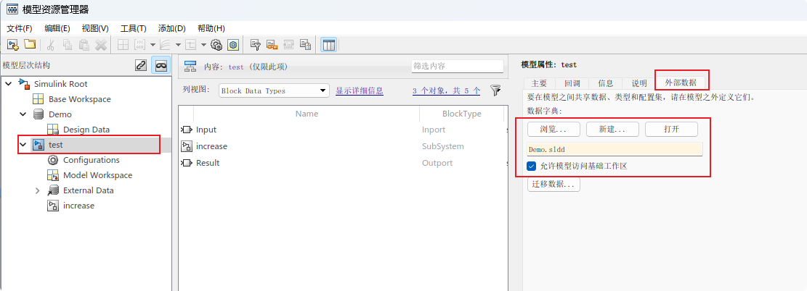
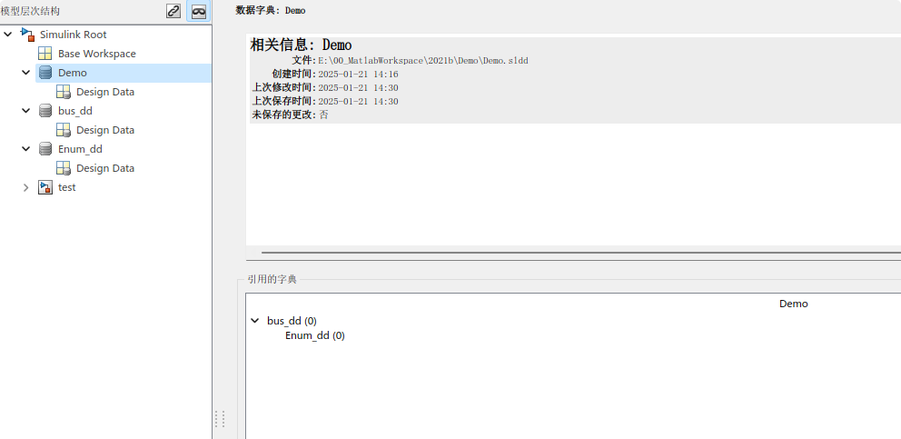
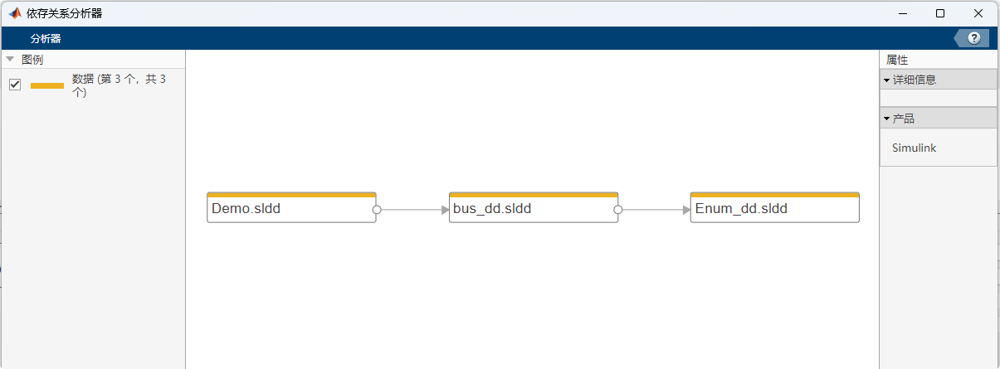

数据的存储
在模型搭建中, 我们会使用到各种各样的数据, 输入 输出 参数 自定义信号等
对于一个数据来讲, 又包含其数据类型的指定, 数值设定. 如果涉及到代码生成, 还要关注其在代码中声明和定义的方式
Simulink模型搭建模型仿真时可以比较随意的设置, 很少影响仿真结果, 但当需要代码生成时, 相关变量的定义与使用要求就会比较严格, 避免代码集成时造成编译错误
常见的数据存储方式
存放在m脚本中
在m脚本中依次定义数值
定义参数(Parameter)
% define `Param01` as a Paramenter
Param01 = Simulink.Parameter;
% set default value as 1
Param01.Value = 1;
Param01.Complexity = 'real';
% `CodeInfo` define properties which influence how code generate
Param01.CoderInfo.StorageClass = 'Custom';
Param01.CoderInfo.Identifier = '';
Param01.CoderInfo.Alignment = -1;
% when generate, Model whill include <demo.h> which defined Param01
Param01.CoderInfo.CustomStorageClass = 'ImportFromFile';
Param01.CoderInfo.CustomAttributes.HeaderFile = 'demo.h';
Param01.CoderInfo.CustomAttributes.PreserveDimensions = false;
Param01.Description = 'Parameter export Demo for blog';
Param01.DataType = 'uint8';
Param01.Min = 0;
Param01.Max = 15;
Param01.DocUnits = 'm';
将上述命令保存为一个m文件并运行, 此时工作区能生成一个Parameter变量, 其属性与命令行定义一致
生成c代码:
#include "demo.h"
定义数据类型(AliasType)
m命令定义
Demo_U8 = Simulink.AliasType;
Demo_U8.Description = '';
Demo_U8.DataScope = 'Auto';
Demo_U8.HeaderFile = '';
Demo_U8.BaseType = 'uint8';
生成c代码:
typedef uint8_T Demo_U8;
其他注意事项
除以上外, 常用的 还可以定义枚举, 总线(bus 对应代码中的结构体类型)等等
可以将各种各样的定义全部汇集到一个m文件中, 模型需要运行时运行该文件, 可依次在工作区内新建各种类型与变量
m文件执行时按照从上至下的顺序执行, 因此, 数据类型的定义一定要先于用到该类型变量的定义, 否则运行时会报错
m脚本基础结构
- base data type define(Alias Enum)
- bus define(in case bus element using costume base datatype)
- signal parameter define
m脚本必须运行数据方可加载到工作区, 所以每次在模型编译前, 务必保证所需要的数据均已加载
存放在数据词典(sldd)中
数据词典(sldd)类似于一个工作区, 其中可定义各种各样的数据类型及变量, 当打开该词典时, m命令和Simulnk模型可获取其中的内容
sldd提供可视化的操作界面, 可以拜托命令行的限值, 方面维护
sldd新建
命令行新建
略
模型资源浏览器(Model Explorer)新建
在模型空白处点击鼠标右键, 选择第一个
Explorer即可打开如没有模型, 可在Matlab命令行输入
daexplr打开
文件-> 新建 选择数据词典

sldd操作
新增属性或变量
选中sldd中的Design Data, 工具栏中添加即可添加各种类型与变量

基础工作区也可使用操作, 选中
Base Workspace即可
数据在基础工作区与sldd之前的移动与复制
在模型资源浏览器中, sldd中的数据和工作区中的数据可任意剪切复制, 且支持拖动操作. 故如果要将由m脚本存储的数据转换为由sldd维护, 可运行m脚本将数据加载至基础工作区, 打开资源浏览器, 选中基础工作区内的所有变量, 直接拖入sldd中保存即可
sldd与模型的链接
模型属性中可链接到其需要引用的sldd文件, 引用后打开模型时会自动加载sldd, 可省去手动打开sldd的麻烦

sldd的嵌套
在Matlab设计中, 一个模型只可引用一个数据词典, 如果数据类型, 标定参数, 信号量在多个数据词典中维护时, 需要使用sldd的嵌套
所谓sldd嵌套, 是因为sldd可以引用另外的sldd sldd的引用规则与m语言定义数据结构类似, 此sldd引用到的数据类型定义, 必须在引用的sldd中体现, 具体如下:


Demo.sldd中使用了由bus_dd.sldd定义的总线;
bus_dd.sldd总线元素中使用了由Enum_dd.sldd定义的枚举